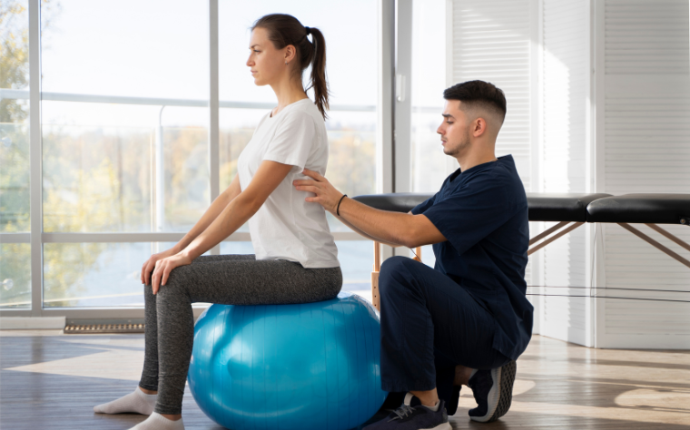
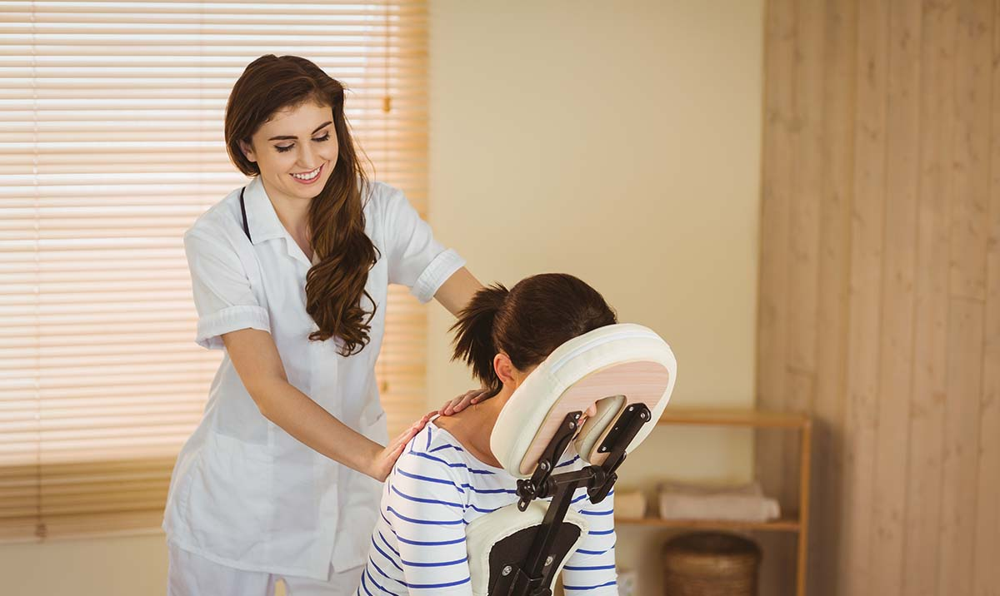

Como funciona essa modalidade integrativa?
A modalidade integrativa na Vitalis Saúde Integrada representa uma abordagem holística e abrangente para o cuidado com a saúde. Nossa filosofia se baseia na compreensão de que a saúde não é apenas a ausência de doença, mas um equilíbrio dinâmico entre corpo, mente e espírito.

Ao adotar a medicina integrativa, combinamos práticas convencionais com abordagens complementares, buscando oferecer tratamentos personalizados e eficazes. Isso inclui a integração de terapias tradicionais, como medicamentos e procedimentos médicos, com terapias complementares, como acupuntura, fisioterapia integrativa e a promoção de estilos de vida saudáveis.
Nosso objetivo é ir além da simples gestão de sintomas, trabalhando para identificar e tratar as causas subjacentes das condições de saúde. Isso implica uma colaboração estreita entre médicos, especialistas em saúde mental, nutricionistas e outros profissionais, para oferecer um plano de cuidados abrangente e adaptado às necessidades individuais de cada paciente.
Nossos serviços
Consulta Médica
A consulta médica é um momento
crucial na jornada de cuidados com
a saúde, proporcionando uma oportunidade
valiosa para a avaliação e compreensão
das condições do paciente. Durante
essa interação, o médico realiza uma
análise minuciosa dos sintomas,
histórico médico e, quando
necessário, solicita exames
complementares.
Reeducação Postural Global
A Reeducação Postural Global (RPG)
é uma abordagem terapêutica que visa
corrigir desequilíbrios posturais por meio
de exercícios e alongamentos específicos.
Focando na compreensão do corpo como
um todo, a RPG busca identificar padrões
posturais inadequados que podem contribuir
para dores e disfunções musculares.

Massoterapia
A massoterapia é uma prática terapêutica
que utiliza diferentes técnicas de massagem
para promover o relaxamento, aliviar tensões
musculares e proporcionar bem-estar físico e
mental. Por meio de toques suaves ou mais
firmes, o massoterapeuta trabalha áreas
específicas do corpo, estimulando a
circulação sanguínea, melhorando a
flexibilidade e reduzindo o estresse
acumulado.